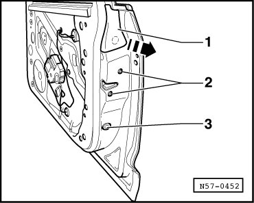
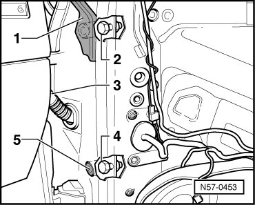
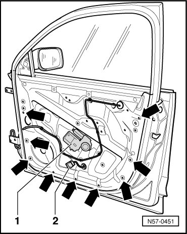
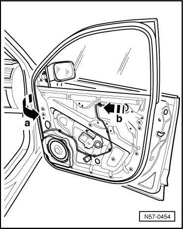
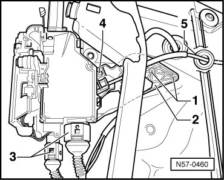
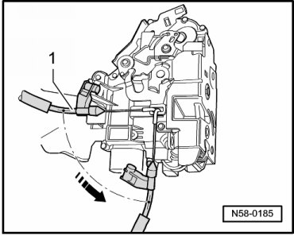
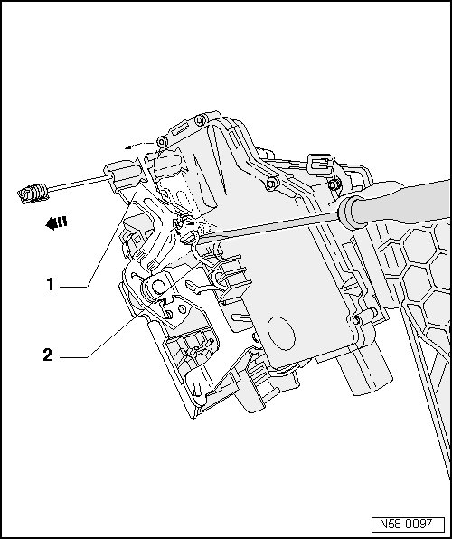
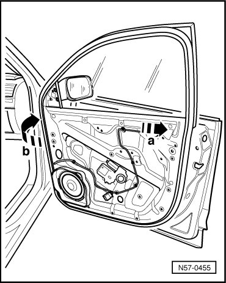
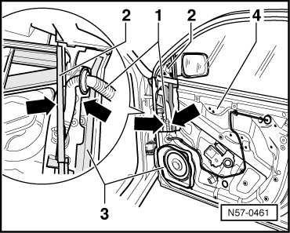
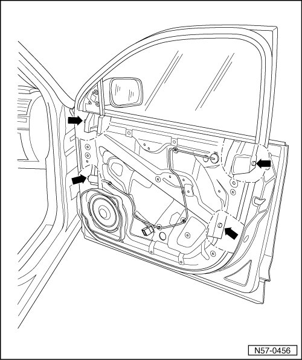

Door Lock
Front Door
Door Lock
The subframe consists of the assembly carrier and the window frame.
Window regulator, door lock and speaker are secured to subframe.
Door lock can only be removed in conjunction with subframe.
Removing
• The door window must be closed.
- Remove front door trim.

- Remove the lock cylinder housing, refer to --> [ Lock Cylinder Housing ] Lock Cylinder Housing
- Unclip the clip - 1 - from the door handle - 2 -.
- Pry off caps - 1 - and - 3 -.

- Remove bolts - 1 - and - 3 - from the window frame.
Tightening specification: 20 Nm.
- Remove bolts - 2 - from door lock.
Tightening specification: 20 Nm.
- Remove the caps - 1 - and - 5 -.

- Remove bolts - 2 - and - 4 - from the window frame.
Tightening specification: 20 Nm
- Remove bolts from door lock.
Tightening specification: 20 Nm
- Disconnect boot - 3 - from A-pillar and separate connectors.
- Guide boot and connectors through opening in outer door panel.
- Separate the connector - 2 - from window regulator motor - 2 - and guide it through the opening in the assembly carrier.

- Remove bolts - arrows -.
Tightening specification: 8 Nm
- Pull front part of subframe slightly away from outer door panel - arrow a -.

- Be careful to guide the wiring as well.
- Pull subframe out of outer door panel toward hinge side - arrow b -.
- When doing this, make sure that door lock does not catch in outer door panel.
- Drill out both rivets - 1 -.

- Disconnect the connectors - 3 - and press the rubber grommet - 5 - out of the subframe.
- The angle bracket is fastened to the door lock with a rivet - 4 - and a locking tab.
• The angle bracket is not part of the door lock delivery package. The angle bracket must be replaced every time it is removed.
- Unclip the release - 1 - from the door lock.

- Turn the release nipple 90 ° and remove it from the ring.
To install the door lock, perform the steps used in removal in reverse order.
Installation

- Pull the operating lever - 1 - in the direction of the - arrow -.
- Using a screwdriver, tension the spring - 2 - secured to the door lock in the direction of the - arrow - and engage the lock lever in the spring.
• Engaging the operating lever secures the lock. This prevents the release from being clipped in "incorrectly" later.
- Insert the subframe into the door.

- Guide subframe from hinge side into outer door panel - arrow a -.
- When doing this, make sure that the door lock is guided into the installed position in the outer door panel without catching.
- Press front area of subframe against outer door panel - arrow b -.
- Install all the bolts and tighten them. Tightening specification: 8 Nm.
- Make sure the wiring - 1 - is correctly routed between the outer door panel - 2 - and window frame - 3 -.

• If the wiring is pinched between the outer door panel and window frame, the cable will be damaged and electrical components in the door will fail.
- Start all bolts - arrow - and tighten. Tightening specification: 8 Nm.
- Connect connector - 2 - on window regulator motor - 1 -.

- Make sure that all three adjusting elements are completely retracted.
- Start all four window frame bolts - arrows -.
- Adjust height and angle of window frame precisely to contour of vehicle.
- First tighten top bolt on hinge side.
- Then tighten the other three bolts in the adjusting elements.
Further installation is performed in the reverse order of removal.
• Then perform function test.